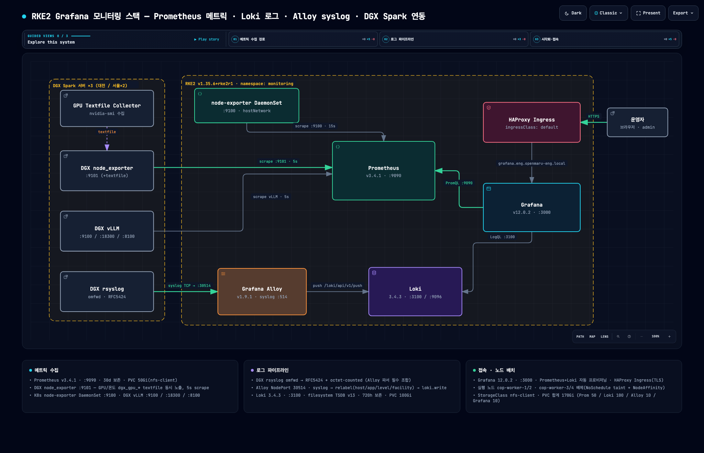
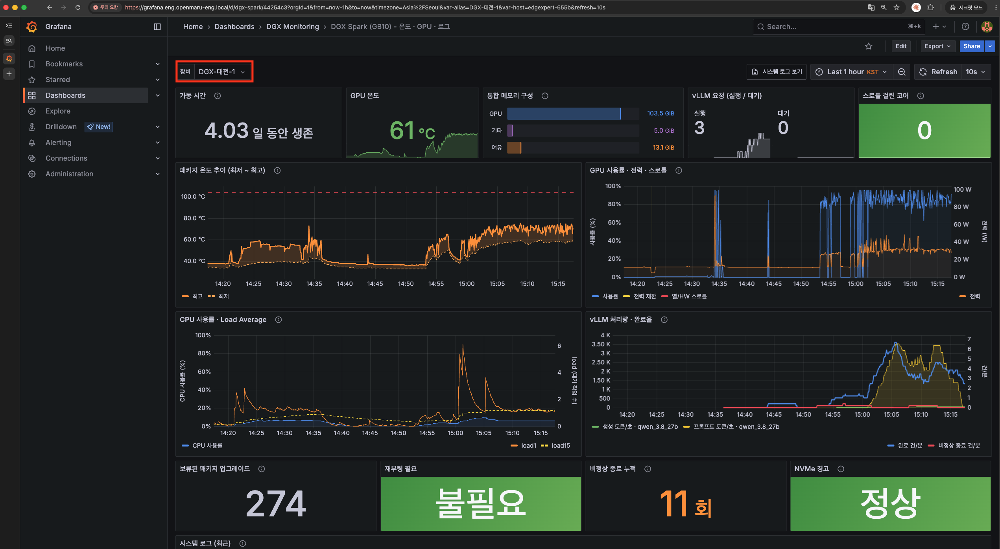
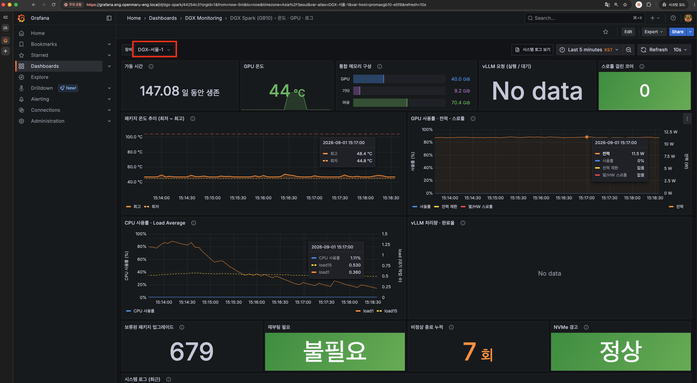
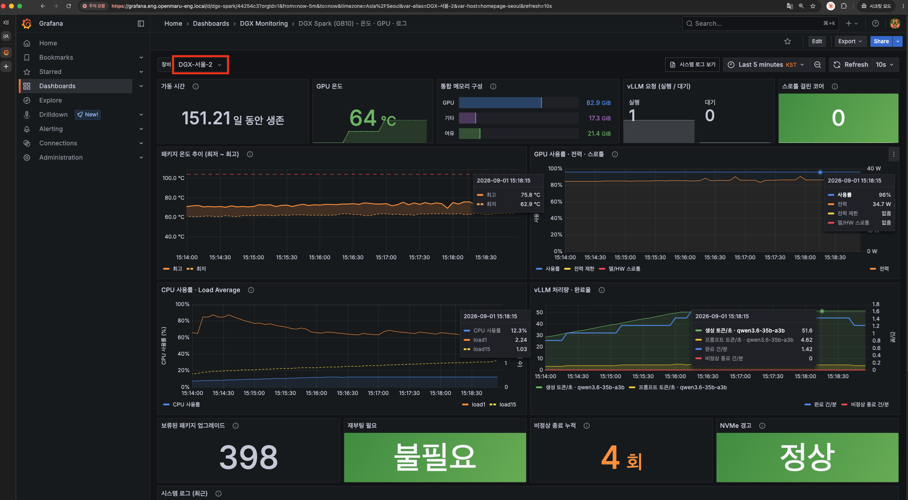

역할플랫폼 엔지니어 (아키텍처 설계·매니페스트 작성·배포 전담)
- ① 문제 발견
-
- 상황: 사내 Local LLM 추론 서버 NVIDIA DGX Spark(GB10) 3대(대전 1대 / 서울 2대) 운영.
- 문제: GPU 자원 사용률·온도·스로틀 상태와 시스템 로그를 서버에 직접 접속해 확인해야 했고 3대를 각각 확인해야 하는 구조.
- 필요: 메트릭과 로그를 한 화면에서 상관 분석할 수 있는 통합 관측 환경.
- ② 해결 방식
-
- 구성: RKE2 v1.35.6+rke2r1 클러스터에
monitoring네임스페이스를 신설하고 Prometheus(메트릭) + Loki(로그) + Alloy(syslog 수집) + Grafana(시각화) 구축. - DGX 사전 구성: 포트 충돌(9100 vLLM 점유)로 node_exporter를 :9101로 분리, GB10 hwmon 콜렉터 비활성화 후
nvidia-smi기반 GPU textfile collector 스크립트·systemd 서비스 작성. - 로그 파이프라인: DGX rsyslog → Alloy NodePort 30514 → relabel(host/app/level/facility) → Loki push.
- 운영 연동: Grafana 데이터소스·대시보드 자동 프로비저닝 및 HAProxy Ingress(TLS) 연동.
- 구성: RKE2 v1.35.6+rke2r1 클러스터에
- ③ 성과
-
- AS-ISGPU 추론 서버의 자원 사용률·온도·스로틀 상태와 시스템 로그를 서버에 직접 접속해 확인해야 했고 3개의 DGX 서버의 모니터링이 필요로 함.
- TO-BEPrometheus 메트릭 + Loki 로그를 Grafana 단일 화면에서 상관 분석 가능한 환경을 구축하여 DGX Spark(GB10) GPU 온도·전력·클럭·냉각 스로틀과 vLLM 추론 지표를 실시간 관측.
- Prometheus 30일 / Loki 720h 보관 정책과 총 170Gi PVC 설계로 안정적인 장기 관측 기반 마련.
- ④ 한계와 개선
-
- DGX 로그 미수신 원인은 Alloy syslog 파서가 요구하는 RFC5424+octet-counted 규격과 rsyslog 기본값(RFC3164)의 불일치로 확인.
- 로그 파이프라인 구축 시 송신·수신 양단의 포맷 규격 사전 합의 및 검증 필요성 확인.
- ⑤ 프로젝트 아키텍처 (Archify 스킬)
-

- ⑥ 프로젝트 결과
-
-

-

-

-
- ⑦ 테스트 및 기술정리